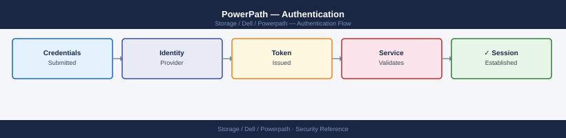

PowerPath — Authentication¶

Before you begin¶
- Access: Storage admin credentials (cluster admin or equivalent)
- Change management: security changes require CAB approval in most environments
- Rollback plan: document current state before any security control change
- Testing: validate in a non-production environment first where possible
Overview¶
PowerPath does not implement its own authentication system. There is no PowerPath-native login, user database, or session management. Access to powermt CLI commands is controlled entirely by the host operating system's authentication and authorisation mechanisms.
This design means PowerPath security is inherited from the host OS security posture. Any account with sufficient OS privilege can run any powermt command — there is no additional PowerPath credential check.
Linux Authentication¶
On Linux, all powermt commands that modify configuration require root privileges. Read-only display commands (powermt display) may or may not require root depending on the PowerPath version and kernel configuration.
Root Access¶
The simplest and least secure model: operations staff SSH to the host as root and run powermt directly. Acceptable only in environments with full SSH key control and no shared root passwords.
# Direct root access
ssh root@db-prod-01
powermt display dev=all
powermt set policy=CLAROpt class=all
powermt save
root@db-prod-01's password:
Symmetrix ID: 000297900001
Logical device name: emcpowera
Symmetrix address: 5000097900001234
Director: 4e
Port: 0
dev = emcpowera
hsv210 (/dev/sda): Alive; Policy: SymmOpt; Queued IOs: 0
hsv211 (/dev/sdb): Alive; Policy: SymmOpt; Queued IOs: 0
hsv212 (/dev/sdc): Alive; Policy: SymmOpt; Queued IOs: 0
hsv213 (/dev/sdd): Alive; Policy: SymmOpt; Queued IOs: 0
...
Setting policy to CLAROpt for all devices
Policy saved to /etc/powermt.custom
Common errors
powermt: Command not found — Install EMC PowerPath package with apt-get install emc-powerpath or yum install EMCpower.LINUX depending on your distribution.
Permission denied (publickey,password) — Verify SSH key is loaded with ssh-add or use password authentication; check that root login is enabled in /etc/ssh/sshd_config.
powermt: Unable to connect to Symmetrix — Confirm the storage array is reachable and PowerPath daemon is running with systemctl status powerpath.
Sudo-Based Access (Recommended)¶
The recommended model for Linux: create a named storage administration account and grant it sudo access only to specific powermt commands. This provides auditability (sudo logs the caller's real username) while restricting blast radius.
Sudoers configuration for a storage admin account:
# /etc/sudoers.d/powerpath
# Storage admin — full powermt access
svc-storage ALL=(root) NOPASSWD: /usr/sbin/powermt
Common errors
sudoers:1 syntax error near line 1 — Verify the file is edited only with visudo and check for trailing whitespace or missing spaces around operators.
sudo: /etc/sudoers.d/powermt: command not found — The sudoers.d file is a configuration file, not executable; verify it's in /etc/sudoers.d/ with correct permissions (0440) and owned by root:root.
This grants the svc-storage account the ability to run any powermt subcommand. If tighter restriction is needed, specify individual commands:
# /etc/sudoers.d/powerpath-monitoring
# Read-only monitoring account — display and registration check only
svc-monitoring ALL=(root) NOPASSWD: \
/usr/sbin/powermt display dev=all, \
/usr/sbin/powermt display ports class=all, \
/usr/sbin/powermt display options, \
/usr/sbin/powermt check_registration, \
/usr/sbin/powermt version
Common errors
sudoers: parse error near line 5 — Ensure each command line ends with a comma and there are no trailing spaces after the final backslash.
svc-monitoring is not in the sudoers file. This incident will be reported. — Verify the sudoers.d file is owned by root:root with 0440 permissions and the user account svc-monitoring exists.
Validate the sudoers file syntax before applying:
Common errors
visudo: /etc/sudoers.d/powerpath-monitoring: No such file or directory — Create the sudoers file first with touch /etc/sudoers.d/powerpath-monitoring and appropriate permissions before validating.
visudo: /etc/sudoers.d/powerpath-monitoring: bad permissions, should be 0440 — Fix file permissions with chmod 0440 /etc/sudoers.d/powerpath-monitoring to match sudoers security requirements.
PAM Integration¶
PowerPath itself does not integrate with PAM. Host SSH authentication via PAM (including LDAP, Active Directory via SSSD, or MFA via PAM RADIUS) applies normally — PAM controls who can log into the host; once logged in, sudo controls what they can run.
For environments with Active Directory integration on Linux:
# Confirm the storage admin AD group resolves on the host
id svc-storage
getent group storage-admins
# Grant the AD group sudo access to powermt
# /etc/sudoers.d/powerpath-ad
%storage-admins ALL=(root) NOPASSWD: /usr/sbin/powermt
uid=1002(svc-storage) gid=1002(svc-storage) groups=1002(svc-storage),1003(storage-admins)
storage-admins:x:1003:svc-storage,admin-user,storage-ops-user
Common errors
id: 'svc-storage': no such user — Verify the service account exists in AD and has synced to the host via LDAP/SSSD with getent passwd svc-storage.
storage-admins:x:1003:(empty) — Confirm AD group members are syncing by checking SSSD logs (journalctl -u sssd -n 50) and verifying group membership in Active Directory.
SSH Key Management¶
Hosts running PowerPath should enforce SSH key authentication and disable password-based SSH login for root:
Common errors
sshd[12345]: error: Permissions denied (publickey). — Ensure your public key is added to /root/.ssh/authorized_keys before disabling password authentication.
sshd: no hostkeys available -- exiting. — Generate SSH host keys with ssh-keygen -A before restarting sshd.
This ensures that interactive root access requires a managed SSH key, reducing the risk of credential-based attacks on hosts with privileged PowerPath access.
Windows Authentication¶
On Windows Server, PowerPath installs as a system service and filter driver. The powermt command requires Local Administrator rights. There is no finer-grained Windows permission model for PowerPath — it is binary: Local Administrator or no access.
Local Administrator Groups¶
# Confirm account is in the local Administrators group
Get-LocalGroupMember -Group "Administrators"
# Add a service account to local Administrators (requires existing admin rights)
Add-LocalGroupMember -Group "Administrators" -Member "DOMAIN\svc-storage"
Windows Remote Management (WinRM)¶
For remote PowerPath management on Windows, WinRM with constrained language mode or PowerShell JEA (Just Enough Administration) can be configured to restrict which powermt commands a delegated account can run remotely:
# Example JEA configuration — restrict to display commands only
# In a JEA role capability file (.psrc):
VisibleExternalCommands = 'powermt display dev=all', 'powermt check_registration'
Active Directory Integration¶
Windows Server hosts joined to Active Directory authenticate via Kerberos. Grant the relevant AD security group Local Administrator membership on PowerPath hosts via Group Policy:
Computer Configuration > Policies > Windows Settings >
Security Settings > Restricted Groups >
Add DOMAIN\Storage-Admins to local Administrators
AIX Authentication¶
On IBM AIX, powermt requires root access. AIX RBAC (Role-Based Access Control) can be used to grant the powermt command to a non-root user:
# Create a custom role for PowerPath operations
mkrole rolelist=powerpath_admin
# Assign the powermt binary to the role
# Edit /etc/security/roles to include command access
# Assign the role to a user
chuser roles=powerpath_admin storage_admin_user
(no output — command completes silently)
(no output — command completes silently)
(no output — command completes silently)
Common errors
mkrole: 0551-102 Cannot access the /etc/security/roles file. — Ensure you are running as root and the /etc/security directory has proper permissions (typically 755).
chuser: 0551-101 User storage_admin_user does not exist. — Create the user first with useradd storage_admin_user before assigning roles.
For most AIX environments, the simpler approach is a named shared account in the system group that is permitted to run powermt, with sudo configured via the IBM AIX sudo package.
Automation and Service Accounts¶
When PowerPath monitoring or automation scripts run powermt commands, use a dedicated service account rather than a shared root password or personal admin account.
Principles for automation service accounts:
- Least privilege: Grant only the
powermtsubcommands the automation actually needs. Monitoring scripts typically need onlydisplayandcheck_registration— notset,save, orconfig. - No interactive login: Disable interactive shell login for the service account; only sudo-based command execution should be permitted.
- SSH key authentication: Use a unique, passphrase-protected SSH key for each automation system. Rotate annually.
- Audit trail: Ensure all
powermtcommands run by the service account are logged via sudo (/var/log/secureon RHEL/OEL,/var/log/auth.logon Debian/Ubuntu).
# Example: monitoring service account with restricted sudo
# /etc/sudoers.d/powerpath-svc-monitor
Defaults:svc-monitor !requiretty
svc-monitor ALL=(root) NOPASSWD: /usr/sbin/powermt display dev=all
svc-monitor ALL=(root) NOPASSWD: /usr/sbin/powermt display ports class=all
svc-monitor ALL=(root) NOPASSWD: /usr/sbin/powermt check_registration
svc-monitor ALL=(root) NOPASSWD: /usr/sbin/powermt display options
Common errors
sudoedit: /etc/sudoers.d/powerpath-svc-monitor: syntax error near line 3 — Verify the sudoers file syntax with visudo -cf /etc/sudoers.d/powerpath-svc-monitor before applying.
svc-monitor is not in the sudoers file. This incident will be reported. — Ensure the service account svc-monitor exists with id svc-monitor and the sudoers file is in /etc/sudoers.d/ with mode 0440.
powermt: command not found — Install or verify the PowerPath package is installed with rpm -qa | grep powerpath or apt list --installed | grep powerpath.
Audit Trail¶
PowerPath does not write its own audit log. Administrative actions (powermt set, powermt save, powermt config, powermt remove) are only traceable through:
- sudo logs (Linux):
/var/log/secureor/var/log/auth.log— records who ran whichpowermtcommand via sudo, including timestamp and originating user - Shell history: If admins run
powermtas root, the command will appear in the root shell history (/root/.bash_history) — unreliable unless audited centrally - Windows Event Log:
powermtexecutions on Windows are not specifically logged by PowerPath; rely on Windows process creation auditing (Security Event ID 4688) if process-level audit is required - Centralised logging: Forward sudo logs and Windows Event Log to a SIEM for retention and alerting on privileged PowerPath operations
For change management compliance, document every powermt set and powermt save operation in the associated change record, including the before/after output of powermt display options.
PowerPath Management Suite (PPMS) Authentication¶
Dell PowerPath Management Suite is the optional centralised management platform for PowerPath-managed hosts. PPMS has its own authentication layer, separate from host OS authentication:
- PPMS uses local accounts and optionally integrates with LDAP/Active Directory for SSO
- Role-based access within PPMS: Administrator, Operator, and Read-Only roles map to full management, limited change, and view-only access respectively
- PPMS API access uses token-based authentication; tokens are scoped per role
- For environments using PPMS, direct
powermtcommand access on individual hosts should be restricted to break-glass scenarios
Refer to the Dell PowerPath Management Suite Installation and Administration Guide for PPMS-specific authentication configuration.
Quick Reference¶
| Platform | Authentication Mechanism | Minimum Required Privilege |
|---|---|---|
| Linux | Root or sudo | Root (or sudo to powermt) |
| Windows Server | Windows authentication | Local Administrator |
| AIX | Root or AIX RBAC | Root (or RBAC role with powermt) |
| HP-UX | Root | Root |
| Solaris | Root or RBAC | Root (or RBAC profile) |
| PowerPath/VE (ESXi) | vSphere authentication | vSphere Administrator or Storage Administrator role |
| PPMS | Local account or LDAP/AD | PPMS Administrator role |
| --- |
Related Reference¶
- Standard LDAP Integration — field reference, service account standards, TLS requirements, and connectivity testing
- Standard SAML Configuration — SP/IdP setup, Azure AD and Okta steps, attribute mapping, and security requirements